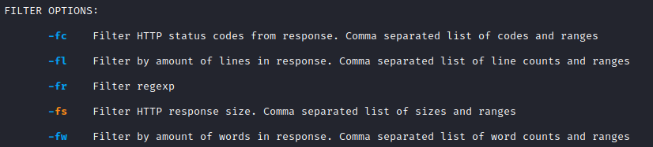

Enumeration HTTP
nikto
ffuf• Subdomain Enumeration
ffuf -w /usr/share/seclists/Discovery/DNS/subdomains-top1million-5000.txt:FUZZ -u https://FUZZ.example.com/
◇ Vhosts
sudo sh -c 'echo "SERVER_IP hack.com" >> /etc/hosts'
ffuf -w /usr/share/seclists/Discovery/DNS/subdomains-top1million-5000.txt:FUZZ -u http://hack.com -H http://FUZZ.hack.com -fs 2067
• Directory Enumeration
ffuf -w /usr/share/seclists/Discovery/Web-Content/directory-list-2.3-medium.txt:FUZZ -u http://SERVER_IP:PORT/FUZZ
• Extensions enumeration
Note: The wordlist we chose already contains a dot (.), so we will not have to add the dot after "index" in our fuzzing.
ffuf -w /usr/share/seclists/Discovery/Web-Content/web-extensions.txt:FUZZ -u http://SERVER_IP:PORT/indexFUZZ
ffuf -w /usr/share/seclists/Discovery/Web-Content/web-extensions.txt:FUZZ -u http://SERVER_IP:PORT/directory_found/indexFUZZ
• Pages Enumeration (.php)
ffuf -w /usr/share/seclists/Discovery/Web-Content/directory-list-2.3-small.txt:FUZZ -u http://SERVER_IP:PORT/blog/FUZZ.php
• Recursive Directory enumeration
◇ php files
ffuf -w /usr/share/seclists/Discovery/Web-Content/directory-list-2.3-small.txt:FUZZ -u http://188.166.172.138:32475/FUZZ -recursion -recursion-depth 2 -e .php -v 2
◇ sh, cgi,txt,conf files
ffuf -w /usr/share/seclists/Discovery/Web-Content/directory-list-2.3-small.txt:FUZZ -u http://188.166.172.138:32475/FUZZ -recursion -recursion-depth 2 -e .sh,.cgi,.txt,.conf -v 2
• Search files in the main directory
ffuf -w /usr/share/seclists/Discovery/Web-Content/directory-list-2.3-medium.txt:FUZZ -u http://188.166.172.138:32475/FUZZ -e .sh,.txt,.conf -v 2